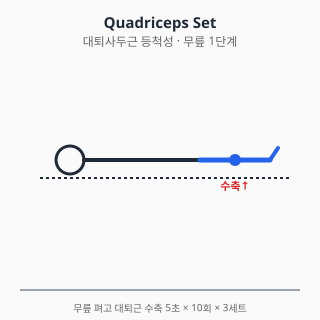
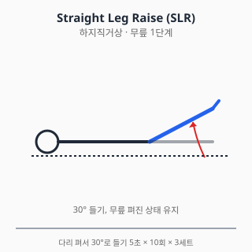
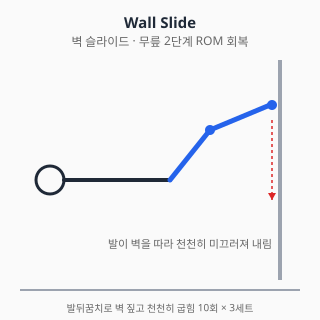
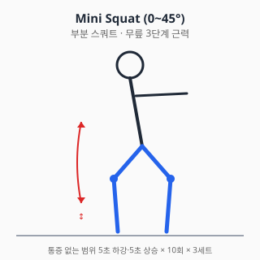

무릎 통증 — 진단과 치료
⚠️ 본 문서는 교육 목적의 정보입니다.
진단·처방을 대체하지 않습니다. 증상이 지속·악화되면
정형외과 전문의 진료를 받으세요.
전체 면책 조항 →
0. 해부학 개요
- 관절: 슬관절 (대퇴–경골, 대퇴–슬개) + 슬개대퇴관절(PFJ)
- 인대 (4대): 전방십자인대(ACL), 후방십자인대(PCL), 내측측부인대(MCL), 외측측부인대(LCL)
- 연골판: 내측·외측 반월상연골 (충격흡수, 하중분산)
- 건: 슬개건(patellar tendon), 대퇴사두건(quadriceps tendon)
- 활액낭: 슬개전·심부 등 여러 부위에 분포
1. 흔한 증상·질환 (감별진단표 + 본문)
| 임상 양상 | 의심 질환 |
|---|---|
| 외상 후 "뚝" 소리 + 즉시 부종 (수시간 이내) | 전방십자인대(ACL) 파열 ± 반월상연골 손상 |
| 무릎 잠김(locking) / 끼임 / 신전 제한 | 반월상연골 파열 (bucket handle) |
| 계단·앉았다 일어날 때 슬개골 앞쪽 통증 | 슬개대퇴통증증후군 (PFPS) / 슬개건염 |
| 50대 이상, 활동 시 내측 통증 + 강직 | 슬관절 골관절염 (OA) |
| 점프 후 슬개건 압통 | 점퍼스 니 (patellar tendinopathy) |
| 외상 + 외반 손상 후 내측 통증 | MCL 손상 |
| 발열 + 부종 + 발적 | 화농성 관절염 / 통풍 / 가성통풍 (응급 감별) |
| 종아리 후방 둥근 종괴 | 베이커 낭종 (Baker cyst) |
1.1 슬관절 골관절염 (OA)
- 50대 이상 호발, 여성·비만·반복적 부하 노출이 위험인자.
- Kellgren-Lawrence(K-L) 영상학적 분류 0~4단계.
- 증상: 내측 통증, 시동통(start-up pain), 활동 시 악화, 강직(30분 이내).
- 자연경과: 점진적 진행. 비만·근력저하·정렬이상이 진행 가속.
1.2 반월상연골 손상
- 외상성(청년) vs 퇴행성(중장년) 두 유형.
- 외상성: 비틀림 손상 + 즉각적 잠김·부종.
- 퇴행성: 만성 내측 통증, 영상에서 수평열상.
- 보존치료 vs 부분절제술 vs 봉합술 결정은 손상 유형·위치·연령 종합 판단.
1.3 전방십자인대(ACL) 파열
- 비접촉성 회전 손상 (농구·축구·스키 호발).
- "뚝" 소리, 수시간 내 혈관절증(hemarthrosis).
- 진단: Lachman test (가장 민감), pivot shift, 전방인출검사 + MRI.
- 청년·활동성 높을수록 재건술 적응. 비활동성 고령자는 보존치료도 옵션.
1.4 슬개대퇴통증증후군 (PFPS)
- "Runner's knee"로도 불림. 청년기 여성 호발.
- 계단 내려갈 때, 오래 앉은 뒤 일어날 때 슬개골 앞쪽 통증.
- 다요인 원인: VMO 약화, 대퇴내회전, 발 회내, 슬개골 정렬 이상.
- 영상 소견 정상이 흔하므로 임상 진단.
1.5 슬개건염 / 대퇴사두건염
- 점프 운동선수 호발 (Jumper's knee).
- 점프·달리기 후 슬개건 압통, 단계별 분류(Blazina 등).
1.6 결정성 관절염 (통풍·가성통풍)
- 급성 단관절염, 발적·열감 동반.
- 관절액 검사로 결정 확인 (요산결정 vs CPPD 결정).
- 화농성 관절염과 반드시 감별 (Gram 염색·배양).
2. 자가 체크리스트 (Red Flag)
- ✋ 외상 직후 변형 / 즉시 체중부하 불가
- 🌡️ 발열 + 부종·발적 (감염성 관절염 응급)
- 🔒 무릎이 잠겨서 펴지지 않음
- 🩸 외상 후 빠른 부종(2시간 이내) — 혈관절증 의심
- 🦵 종아리 부종 + 통증 (DVT 감별)
- ⚖️ 양측성 + 체중감소·발열 (전신질환 감별)
3. 진단
3.1 신체검사
| 검사 | 평가 대상 |
|---|---|
| Lachman test | ACL (가장 민감) |
| Anterior drawer / Pivot shift | ACL |
| Posterior drawer | PCL |
| Valgus / Varus stress test | MCL / LCL |
| McMurray / Apley grind | 반월상연골 |
| Patellar grind / Clarke test | 슬개대퇴 |
| Ober test | 장경인대(IT band) |
3.2 영상검사
- X-ray: 체중부하 AP, 측면, Skyline, Rosenberg(45° flexion PA)
- 초음파: 연부조직, 활액낭, 베이커 낭종
- MRI: 인대·연골·반월상연골 평가 표준
- 관절천자: 감염·결정성 관절염 의심 시
4. 치료
4.1 약물
⚠️ 처방약은 의사 처방·약사 복약지도 하에 사용. 본 섹션은 교육 목적.
A. 일반의약품
A-1. 아세트아미노펜 (Acetaminophen) — OA 1차 옵션 재정렬
- 과거 OA 1차였으나 NICE NG226(2022)에서는 단독 권고를 약화하고 국소 NSAID·운동치료가 우선으로 재정렬됨.
- 용법: 성인 500~1000mg q4~6h, 최대 4g/일. 음주자·간질환자 2g/일 이하.
- 무릎 OA 특이 사항: 단독 효과는 작으나 NSAID 금기자(위궤양·CKD·심부전)에서 안전 1차 옵션.
- 상호작용: 와파린(INR↑), 알코올·이소니아지드(간독성↑).
A-2. 국소 NSAID (디클로페낙 겔/패치)
- NICE NG226(2022) 강한 권고: 무릎·손 OA에서 경구 NSAID보다 우선 시도.
- 전신 노출 약 5~15%로 GI·신·심혈관 부담 적음.
- 무릎 OA 적용 팁: 슬개골 주변·관절선(joint line)에 1일 3~4회 도포.
- 부작용: 광과민, 적용부위 피부염, 드물게 알레르기.
- 제품: 디크놀겔·볼타렌에멀겔 1% 또는 케토프로펜 패치.
A-3. 이부프로펜 / 나프록센 (경구 NSAID)
- 국소 NSAID·아세트아미노펜 효과 부족 시 단기 사용.
- 용량: 이부프로펜 200~400mg q6~8h (OTC 최대 1200mg/일), 나프록센 220~440mg q12h.
- 무릎 특이 주의: 무릎 OA는 만성 질환이라 장기 NSAID 의존성 주의 — 4주 이상 연속 사용 시 의료진 재평가.
- 위장관·심혈관·신장 위험 평가 후 단기 사용. 고령·CKD·심부전·이뇨제 병용자 특히 주의.
A-4. 글루코사민·콘드로이틴 (보충제)
- 국제 가이드라인 입장: ACR 2019·OARSI 2019에서 권고하지 않음 (효과 일관성 부족).
- 일부 환자 보고에서 통증 개선 있으나 RCT 일관된 결과 없음.
- 약물이 아닌 건강기능식품 — 안전성은 비교적 양호하나 와파린 INR 영향 보고.
B. 처방약
B-1. 셀레콕시브 (COX-2 선택 억제)
- 무릎 OA 적용: GI 위험군(고령·위궤양 기왕력·항응고제 병용)에서 비선택 NSAID 대안.
- 용량: OA 200mg/일 (1일 1회 또는 100mg q12h).
- 심혈관 위험: 비선택 NSAID와 유사 (PRECISION 연구, Nissen NEJM 2016).
- 금기: 술폰아미드 알레르기, 관상동맥우회술 후 통증 관리.
- 상호작용: 플루코나졸(셀레콕시브 농도↑), 리튬(농도↑).
B-2. 트라마돌 — 단기 보조
- ACR 2019 조건부 권고: 다른 옵션 실패 후 단기.
- 용법: 50~100mg q6h (1일 최대 400mg, 고령 300mg).
- 무릎 OA 사용 주의: 의존성·내성·세로토닌 증후군 위험.
- 상호작용: SSRI/SNRI(세로토닌 증후군), CYP2D6 억제제(진통 감쇄), MAOI(금기).
B-3. 듀록세틴 (Duloxetine) — SNRI
- ACR 2019, OARSI 2019 무릎 OA에 조건부 권고.
- 만성통증 + 우울·신경병증성 요소 동반 시 고려.
- 용법: 30mg/일 시작 → 1주 후 60mg/일 (식사 무관).
- 부작용: 오심(흔함, 보통 적응), 입마름, 졸림, 변비.
- 금기: MAOI 병용, 조절되지 않은 협각녹내장.
- 상호작용: SSRI·트라마돌과 세로토닌 증후군, 와파린·NSAID와 출혈 위험↑.
B-4. 가바펜틴 / 프레가발린 — 신경병성 통증 동반 시
- 무릎 OA 자체의 1차 옵션은 아니나, 동반 신경병성 통증·신경근병증 시 고려.
- 용법: 가바펜틴 300mg/일 시작 → 1800~3600mg/일 분복. 프레가발린 75mg q12h 시작.
- 어지러움·졸림 빈발 (특히 첫 1~2주). 신기능 저하 시 용량 조절.
C. 국소 주사 (의사 시술 영역)
C-1. 코르티코스테로이드 관절강내 주사
- 단기(2~6주) 통증 개선: 강한 근거 (Cochrane 2015).
- 장기 영향: 반복 주사가 연골 두께 감소와 연관된다는 보고 (McAlindon JAMA 2017).
- ACR 2019: 무릎 OA에 강한 권고(단기), 빈도는 제한.
C-2. 히알루론산 관절강내 주사
- 국내 급여 (참고): 무릎 OA에 한해 제한적 급여 (조회일 2026-06-06).
- 국제 권고 불일치:
- ACR 2019: 권고 안 함 (조건부)
- AAOS 2021: 강한 비권고
- OARSI 2019: 조건부 권고
- 환자 선택·가치 반영해 의사가 결정.
C-3. PRP (Platelet-Rich Plasma)
- 메타분석마다 결과 불일치, 비급여.
- 본 위키 입장: 권고 불충분, 의사 판단.
D. 보충제 — 글루코사민·콘드로이틴
- ACR 2019·OARSI 2019: 권고 안 함 (효과 불확실).
- 식약처 건강기능식품 분류, 의약품 아님.
- 와파린과의 상호작용 보고.
E. 상호작용 풀세트 — 무릎 OA 다약제 환자
| 약물 A | 약물 B | 상호작용 |
|---|---|---|
| NSAID | 와파린 / DOAC | 출혈 위험↑ |
| NSAID | ACEi/ARB + 이뇨제 | Triple whammy AKI |
| NSAID | SSRI / SNRI | GI 출혈↑ |
| 듀록세틴 | 트라마돌 / SSRI | 세로토닌 증후군 |
| 듀록세틴 | 와파린 | 출혈 위험↑ |
| 글루코사민 | 와파린 | INR 변동 보고 |
| 트라마돌 | 알코올 | 중추신경 억제↑ |
약물 섹션 출처
- 식약처 의약품안전나라. https://nedrug.mfds.go.kr (조회일: 2026-06-06)
- NICE Guideline NG226. Osteoarthritis in over 16s. 2022. https://www.nice.org.uk/guidance/ng226
- Kolasinski SL, et al. 2019 ACR/AF Guideline for OA. Arthritis Rheumatol. 2020;72(2):220-233. doi:10.1002/art.41142
- Bannuru RR, et al. OARSI guidelines. Osteoarthritis Cartilage. 2019;27(11):1578-1589. doi:10.1016/j.joca.2019.06.011
- McAlindon TE, et al. Intra-articular triamcinolone on knee OA cartilage. JAMA. 2017;317(19):1967-1975. doi:10.1001/jama.2017.5283
- Jüni P, et al. Intra-articular corticosteroid for knee OA. Cochrane 2015. doi:10.1002/14651858.CD005328.pub3
- Nissen SE, et al. PRECISION trial. NEJM. 2016;375:2519-2529. doi:10.1056/NEJMoa1611593
4.2 물리치료
급성기 (외상 직후 0~2주)
- POLICE 권고: Protection, Optimal Loading, Ice, Compression, Elevation. 완전 휴식 대신 통증 한도 내 적절한 부하.
- 한랭치료 15~20분/회, 1일 3~4회.
- TENS — 단기 통증 보조.
아급성기·만성기
- 온열치료: 운동 직전 가열로 조직 신장성 향상.
- 도수치료: 슬개골 가동술, 경골 회전 가동, 슬와 연부조직 이완.
- 체외충격파(ESWT): 슬개건염에 비교적 강한 근거.
- 테이핑: McConnell taping (PFPS 단기 통증 감소 보고).
금기
- 발열·감염·DVT 의심 시 모달리티 금기.
- 출혈 경향 환자에서 도수치료 신중.
4.3 스트레칭·재활운동
1단계 — 급성기 (0~2주)
- 대퇴사두근 등척성(Quad set): 무릎 펴고 대퇴근 수축 5초 × 10회 × 3세트

운동의 핵심은 무릎을 완전히 펴서 슬개골이 약간 위로 당겨지는 감각을 익히는 것. 통증 없이 가능한 가장 강한 수축을 목표로 한다.
- 발목 펌프: 혈류 촉진·DVT 예방. 누운 상태에서 발을 위아래로 30회.
- 하지직거상(SLR): 누워서 다리 곧게 들기 10회 × 3세트
- 통증 없으면 발목 무게 0.5~1kg 추가

반대측 다리는 무릎 굽혀 바닥에 두고, 환측은 무릎을 완전히 편 채로 약 30°까지 들어올린다. 무릎이 펴진 상태가 유지되지 않으면 대퇴사두근 강화 효과가 감소한다 (Park 2014).
2단계 — ROM 회복 (2~4주)
- 벽 슬라이드(Wall slide): 누워서 발뒤꿈치로 벽 짚고 천천히 굽힘

발이 벽을 따라 미끄러져 내려오면서 무릎이 자연스럽게 굽혀진다. 중력 보조로 ROM을 회복하는 안전한 방법. 통증 한도 내 굴곡 각도까지만 진행.
- 자전거 페달링: 좌식 자전거 저항 0, ROM 회복 우선
- 수동 신전 운동: 발뒤꿈치 받침으로 무릎 완전 신전 회복. 굴곡 회복보다 신전 회복이 보행에 더 중요 — 5° 신전 제한도 보행 장애 유발.
3단계 — 근력 (4~8주)
- 부분 스쿼트 (0~45°): 통증 없는 범위, 천천히 5초 하강·5초 상승

무릎이 발끝을 넘지 않도록 의자에 앉듯이 엉덩이를 뒤로 보낸다. 내반(knee in) 자세는 ACL·연골 부담 증가시키므로 거울을 보며 정렬 확인.
- 레그 프레스 (0~60°): 양측 → 환측 점진
- 카프 레이즈: 종아리 강화 (균형·복귀 준비)
- 사이드 스텝: 둔근 강화 (PFPS·OA 핵심) — 둔근 약화는 무릎 외반 모멘트를 키워 무릎 부담을 가중시키므로 무릎 재활의 핵심 근육.
4단계 — 균형·신경근 (8~12주)
- 단발 균형(Single leg stance): 30초 × 3세트
- BOSU·균형판: 점진적 외란 적용
- 계단 오르내리기: 통증 없으면 점진 증가
5단계 — 스포츠 복귀
- 점프·착지 훈련: 양발 → 단발, 정자세 정렬 강조
- 방향 전환: T-drill, 컷팅 동작
- 종목별 특이 동작: 무릎 외반 모멘트 최소화 코칭
운동 중단 신호
- 운동 중 "뚝" 소리 + 즉시 부종 → 즉시 중단·진료
- 통증 NRS 5/10 초과 시 강도 하향
- 무릎이 펴지지 않거나 잠김 → 즉시 진료
물리·재활 출처
- van Middelkoop M, et al. Knee braces and foot orthoses for PFPS. Br J Sports Med. 2018;52:1170-1178. doi:10.1136/bjsports-2017-098153
- Fransen M, et al. Exercise for osteoarthritis of the knee. Cochrane 2015. doi:10.1002/14651858.CD004376.pub3
- Willy RW, et al. Patellofemoral Pain CPG. JOSPT. 2019;49(9):CPG1-CPG95. doi:10.2519/jospt.2019.0302
- Park SY, Yoo WG. EMG activities of quadriceps during straight leg raise with hip adduction. J Phys Ther Sci. 2014;26(7):1031-1032. doi:10.1589/jpts.26.1031
5. 수술·전문의 의뢰 기준
5.1 관절경적 부분 반월상연골 절제술 / 봉합술
- 봉합 우선: 적위치 + 혈관성 zone(red-red, red-white), 청년·외상성
- 부분절제: 봉합 불가능한 형태, 잠김 동반
- 퇴행성 수평열상에 대한 관절경 — 근거 약화: 운동치료와 비교 우월성 미확립 (Sihvonen NEJM 2013).
5.2 ACL 재건술
- 적응: 청년·고활동, 불안정성 동반, 동반 손상(반월상연골)
- 비활동성 고령자: 보존치료도 옵션
- 재건 시점: 부종·ROM 회복 후 (3~6주) 일반적
5.3 무릎 인공관절치환술 (TKA / UKA)
- TKA 적응:
- K-L 3~4단계 OA + 보존치료 실패
- 통증·기능제한이 일상생활 심각히 침범
- UKA(부분치환): 단일 구획 OA + 인대 정상
5.4 절골술 (HTO, High Tibial Osteotomy)
- 청년·중년 + 내반 변형 + 내측 단일구획 OA에 고려.
5.5 응급·즉시 의뢰
- 외상 후 변형·체중부하 불가 → 골절 감별
- 무릎 잠김 → 반월상연골 응급
- 감염 의심 (발열 + 부종 + 발적) → 즉시 응급실
의사 섹션 출처
- Sihvonen R, et al. Arthroscopic partial meniscectomy vs sham surgery. N Engl J Med. 2013;369:2515-2524. doi:10.1056/NEJMoa1305189
- Beaufils P, et al. ESSKA meniscus consensus. KSSTA. 2017;25:335-346. doi:10.1007/s00167-016-4407-4
- 대한슬관절학회 진료지침
- AAOS Clinical Practice Guideline. Management of OA of the Knee. 3rd ed. 2021. https://www.aaos.org/oak3cpg
6. 통합 참고문헌
각 섹션 말미의 출처 참조.
7. 작성·검토·최종수정일
- 의사: TBD
- 약사: TBD
- 물리치료사: TBD
- 재활치료사: TBD
- 감사역 검수: 통과 (2026-06-06)
- 최종수정일: 2026-06-06
- 버전: 0.2.0 (Sprint 3 풀버전)
자주 묻는 질문 (FAQ)
계단 내려갈 때 무릎이 아파요. 어떤 병일 수 있나요?
계단을 내려갈 때 슬개골 앞쪽 통증은 슬개대퇴통증증후군(PFPS, runner's knee)에서 흔합니다. 50대 이상이라면 슬관절 골관절염도 감별 대상입니다. 양상에 따라 평가가 달라지므로 정형외과 진료가 권고됩니다.
무릎이 잠겨서 펴지지 않아요. 응급인가요?
무릎이 잠겨서 펴지지 않는 상태(locking)는 반월상연골 파열의 'bucket handle' 형태에서 자주 나타나며 비교적 빠른 평가가 필요합니다. 정형외과 진료를 받으시기 바랍니다.